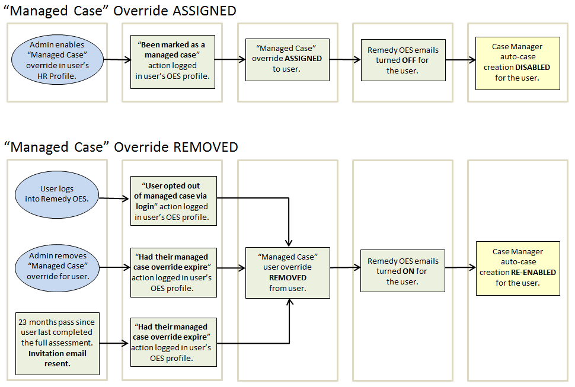
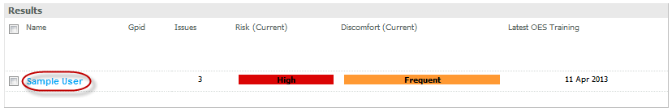
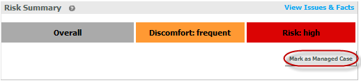
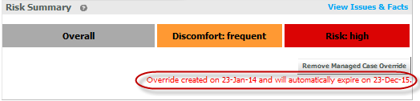
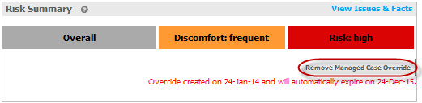
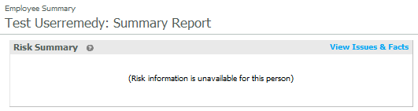
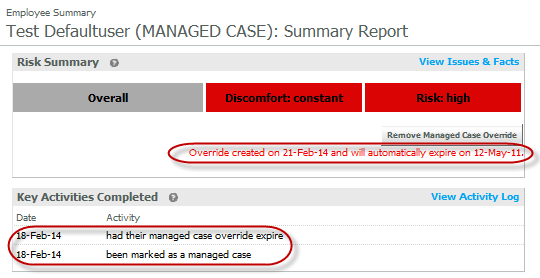
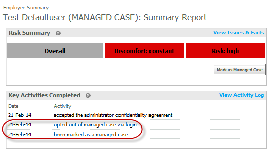

The Managed Case override was created for users with chronic issues. The term "managed" implies the case is being managed by a health professional independent of OES.
The Managed Case override should only be used once the user has received a visit from an ergonomist, physiotherapist, or a Suitably Qualified Experienced Professional and further OES profile updates and desk visits will no longer benefit the user.
The Managed Case override will allow the user to participate in OES without receiving automatic emails to update their profile or having a Case Manager case automatically created.
Once assigned to Managed Case override status, the user will remain in Managed Case override status until one of the following events take place:
The user logs into OES
The action opted out of managed case via login will be recorded in the user's Activity Log.
The user will begin receiving automatic emails from the OES system.
The Managed Case override status is manually removed by a OES administrator
The action had their managed case override expire will be recorded in the user's Activity Log.
The user will begin receiving automatic emails from the OES system.
X months pass since the user last completed the full OES Assessment & Training. (Number of months are a Preference setting for the customer system.)
The action had their managed case override expire will be recorded in the user's Activity Log.
The user will receive an automated invitation email to re-complete the full Assessment & Training.
Note: Once the user re-completes the full Assessment & Training they may once again be placed in Managed Case override status by a OES administrator (if this is still needed).

To ASSIGN the Managed Case override:
From the Administration Home page, use the Find a Person search to find the user you want to assign to Managed Case override.
Click on the user's name to open the Employee Summary.

Under the Risk Summary section select Mark as Managed Case.

.Click OK to confirm you want to ASSIGN Managed Case override to this user
The action been marked as a managed case will be logged in the user's Activity Log.
The Managed Case override status will be indicated by the text (MANAGED CASE) appearing after the user's name. The date the Managed Case override was created will be displayed as well as the date the Managed Case override will expire. The Managed Case override will expire X months following the user's last completion of the full Assessment & Training. (Number of months are a Preference setting for the customer system.)

To REMOVE the Managed Case override:
From the user's the Employee Summary page, select Remove Managed Case Override in the Risk Summary section.

Click OK to confirm you want to REMOVE the Managed Case override from this user.
The action had their managed case override expire will be marked in the user's Activity Log.
Managed Cases - Additional Comments
The option to assign Managed Case override status will not be available if the user does not yet have a risk level assigned (i.e. if the user has not ever completed the Full Self-Assessment & Training).

Managed Case should not be assigned to users who have not completed the Full Self-Assessment & Training within the last X years. (This is typically the customer's training cycle (i.e., the amount of time between when users are expected to complete the full OES assessment and training.)
If Managed Case is assigned to someone who has not completed the Full Self-Assessment & Training assessment within the last X years, the Managed Case will expire at the end of the day it is assigned.

Users with OES administrative access cannot be assigned Managed Case override status (as the status would expire each time the administrator logs into the OES system).
